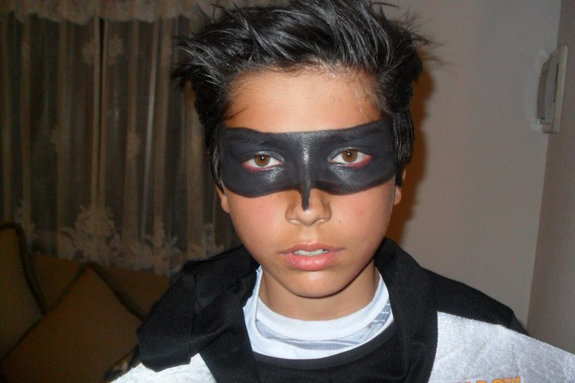

<div class="container animate fadeIn" fxLayout="row">
  <div fxFlex="100%">
    <div class="container__banner">
      <div class="banner__text">
        <span class="banner__title">Martin Barria Joost</span>
        <p>FRONTEND DEVELOPER</p>
        <button mat-icon-button color="accent" aria-label="Example icon-button with a heart icon">
          <mat-icon>favorite</mat-icon>
        </button>
      </div>
    </div>
    <div class="container__body">
      <span class="body__subtitle">Un poco sobre mi historia</span>
      <p class="subtitle__history">Nací en Curicó, Chile, 1998, en realidad no conozco ni tengo ningún recuerdo de curicó, mis padres solamente fueron a parirme allá. 
        <br> 
        Luego de inmediato con mi familia nos fuimos a vivir a Santiago de Chile, estuvimos un par de años en Santiago
        hasta mis 6 años, luego nos mudamos a Punta Arenas
      </p>
      <!--  -->
    </div>
  </div>
</div>